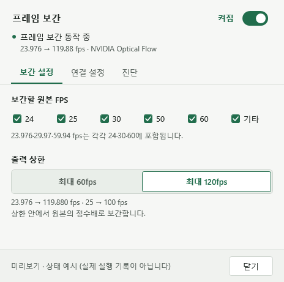

NVOF 사용 설명서
팟플레이어에서 영상을 더 부드럽게.
설치한 뒤 한 번만 연결하면, 선택한 영상에 정수배 보간을 적용합니다.
0.3.2-rate.3 · 최대 60 / 120fps
선택한 상한 안에서 가장 큰 정수배로 보간합니다. 문살·이동 물체·촬영된 화면의 경계 보정과 셰이더 사전 컴파일을 포함합니다.
시작하기 전에
- Windows 10 2004 이상 또는 Windows 11, x64
- 팟플레이어 x64
- Optical Flow를 지원하는 NVIDIA GPU와 드라이버
현재 실제 검증 장비는 RTX 5090입니다. 다른 GPU의 모든 조합을 검증한 것은 아닙니다.
.NET, CUDA Toolkit, Visual C++ 재배포 패키지를 따로 설치할 필요가 없습니다. 팟플레이어와 GPU 드라이버는 별도로 설치되어 있어야 합니다.

설치하기
설치 프로그램 이름은 NvofPotPlayer-0.3.2-rate.3-Setup-x64.exe입니다. 설치 중 추가 런타임을 인터넷에서 내려받지 않습니다.
재생 중인 프로그램을 닫습니다
팟플레이어와 NVOF 설정 창을 모두 종료합니다. 설치 프로그램은 실행 중인 프로그램을 강제로 닫지 않습니다.
설치 위치를 확인합니다
기본 위치는
%LOCALAPPDATA%\Programs\NvofPotPlayer입니다. 현재 사용자용 설치이며, 일반 설치에는 관리자 권한이 필요하지 않습니다. 기존 설정 파일이 있으면 유지합니다.설치를 마칩니다
현재 사용자용 필터가 등록됩니다. 시작 메뉴에 NVOF 설정, 사용 설명서, NVOF 제거가 추가됩니다. 다음 단계에서 팟플레이어에 필터를 연결합니다.
이 설치 파일은 코드 서명되지 않았습니다. 다운로드 출처와 릴리스의 SHA256을 확인하세요. 보안 프로그램을 끄거나 예외를 추가할 필요는 없습니다.
팟플레이어 연결
설치가 끝나도 팟플레이어의 필터 목록에는 직접 추가해야 합니다. 이 과정은 처음 한 번만 하면 됩니다.
필터 목록을 엽니다
팟플레이어에서 F5 → 코덱/필터 → 전역 필터 우선 순위로 이동합니다.
NVOF 필터를 추가합니다
시스템 코덱 추가에서 NVIDIA Optical Flow for PotPlayer를 선택해 추가합니다. 목록의 체크를 켜고 최우선 사용으로 설정합니다.
다른 보간 필터를 해제합니다
Smootter용 VapourSynth, Bluesky Frame Rate Converter 등 다른 보간 필터와 동시에 사용하지 않습니다.
설정창을 열고 영상을 다시 엽니다
등록한 필터를 더블클릭하고 설정 창 열기를 누릅니다. 시작 메뉴의 NVOF 설정에서도 같은 창을 열 수 있습니다.
팟플레이어를 관리자 권한으로 실행하고 있다면
일반 권한으로 실행하는 구성이 가장 간단합니다. 관리자 실행이 필요하다면 NVOF의 연결 설정 탭에서 관리자용 등록을 진행합니다. 이때만 Windows 권한 승인이 필요합니다. 관리자용 등록은 제거 프로그램이 Windows 권한 승인을 받아 자동으로 해제합니다.
보간 설정
프레임 보간을 켜고, 보간할 영상의 원본 FPS를 체크합니다. 변경한 뒤에는 영상을 다시 열어 주세요.
원본 FPS별 적용
24 / 25 / 30 / 50 / 60 / 기타 중 선택합니다. 23.976, 29.97, 59.94 fps는 각각 24, 30, 60 그룹에 포함됩니다. 체크하지 않은 영상은 원본 프레임으로 재생합니다.
최대 60fps / 최대 120fps
원본 프레임을 유지하면서, 선택한 상한을 넘지 않는 가장 큰 정수배로 중간 프레임을 추가합니다. 기본값은 최대 60fps입니다. 예를 들어 24fps는 48 또는 120fps, 25fps는 50 또는 100fps가 됩니다. 배수가 1이면 원본으로 재생하며, 상한보다 빠른 원본을 낮추지는 않습니다.
| 원본 | 최대 60fps | 최대 120fps |
|---|---|---|
| 23.976 | 47.952 ×2 | 119.880 ×5 |
| 24 | 48 ×2 | 120 ×5 |
| 25 | 50 ×2 | 100 ×4 |
| 29.97 | 59.94 ×2 | 119.88 ×4 |
| 30 | 60 ×2 | 120 ×4 |
| 50 | 50 · 원본 | 100 ×2 |
| 59.94 | 59.94 · 원본 | 119.88 ×2 |
| 60 | 60 · 원본 | 120 ×2 |
60 / 120fps는 상한입니다. 모든 영상을 정확히 60 / 120fps로 변환하는 방식이 아닙니다. 설정 변경 후에는 영상을 다시 열어 주세요.
장면 전환과 입모양은 어떻게 처리하나요?
장면 전환이나 신뢰하기 어려운 보간은 원본을 반복할 수 있습니다. 정적인 대화 장면에서는 입모양이 찢어지지 않도록 알려진 원본 형태를 보존합니다. 일정한 화면·물체 이동이 감지되면 이 보호를 꺼 움직임을 방해하지 않도록 합니다. 모든 장면의 왜곡을 없애는 기능은 아닙니다.
자동 화질 보호
현재 버전은 NVIDIA 광학흐름과 자체 합성으로 중간 프레임을 만듭니다. 보간을 켜면 움직임 경계와 화면에 고정된 글자 보호가 자동 적용됩니다.
이전 버전의 GPU 중간 프레임 보정·형태 변화 보호 스위치는 새 엔진에서 사용하지 않습니다. 설정창의 화질 보정 탭에서 현재 동작을 확인할 수 있습니다.
머리카락, 연기, 반투명 물체와 복잡하게 겹친 움직임에는 깨짐이 남을 수 있습니다. 모든 영상의 품질이나 RTX 5070의 4K60 → 120 성능을 보장하지 않습니다.
10비트 SDR 영상
별도 옵션을 켤 필요 없이, 팟플레이어가 전달한 10비트 SDR 프레임을 GPU에서 변환해 보간합니다. beta.1은 이 경로에서 발생하던 검은 화면과 재생 직후 멈춤을 수정했습니다.
| 영상 입력 | 처리와 출력 |
|---|---|
| 8비트 SDR · NV12 | 기존 NV12 경로로 보간하고 8비트로 출력합니다. |
| 10비트 SDR · P010 | GPU에서 8비트 NV12로 변환한 뒤 보간합니다. 원본 시점의 프레임도 8비트로 출력합니다. |
| HDR 영상 | 이번 버전의 지원 범위가 아닙니다. 10비트 SDR 변환에는 HDR 톤매핑이 포함되지 않습니다. |
10비트 입력 지원이 10비트 출력 유지를 뜻하지는 않습니다. 현재 자체 보간 경로의 출력 형식에 맞춰 정밀도를 줄이므로 미세한 그라데이션은 원본 10비트와 차이가 날 수 있습니다. 현재 확인한 색 형식은 BT.709 / 제한 범위 SDR입니다.
GPU 처리와 진단 기록은 어떻게 달라지나요?
프레임을 CPU RAM으로 내려받지 않고 GPU 안에서 P010 → NV12로 변환합니다. GPU 내부 복사는 남아 있으며, 10비트 경로는 안정성을 위해 변환·전달 완료를 확인합니다. 입력 형식과 변환 여부는 로컬 status.json의 inputSurfaceFormat과 inputConversion에 기록됩니다.
하드웨어 가속과 VSR
팟플레이어의 내장 디코더와 내장 렌더러를 유지합니다. 아래 항목을 확인하세요.
| 항목 | 설정 |
|---|---|
| 하드웨어 가속(DXVA) | 사용 |
| D3D11 DXVA 우선 사용 | 사용. 내장 D3D11 렌더러 조건부 상태도 확인된 구성입니다. |
| DXVA2 Copy-Back | 사용하지 않음 |
| 영상 출력 장치 | 내장 Direct3D 11 영상 출력 장치 |
| VSR | 원하는 경우 GPU Super Resolution 사용 |
DXVA 항목은 F5 → 코덱/필터 → 비디오 코덱 → 내장 코덱/DXVA 설정에 있습니다.
영상은 GPU 메모리에서 처리하지만 GPU 내부 복사와 일부 대기는 남아 있습니다. zero-copy나 완전 비동기 처리라는 뜻은 아닙니다.
동작 확인
체크한 FPS의 영상을 다시 엽니다
예를 들어 원본 23.976 fps 영상은 24 그룹에 체크되어 있어야 합니다.
설정창 상단의 실제 상태를 봅니다
프레임 보간 동작 중과 23.976 → 47.952 fps 같은 표시를 확인합니다. 스위치가 켜져 있다는 것과 실제 보간 중이라는 것은 별개입니다.
진단 탭에서 전달 경로를 확인합니다
GPU 메모리로 직접 전달이 실제 네이티브 경로의 확인 기준입니다. 팟플레이어 H/W 표시만으로 판단하지 않습니다.
탐색과 종료를 확인합니다
앞뒤로 이동한 뒤 정상 재생되는지 확인합니다. 탐색 후에는 이전 위치의 보간 이력을 버리고 새 위치에서 시작합니다. 사용을 마친 뒤 정상 종료되는지도 확인하세요.
NVOF 자체 상태 문구는 영상 위에 표시되지 않습니다. VSR 표시나 팟플레이어의 재생 정보는 각각의 프로그램 설정입니다.
문제 해결
한 번에 여러 설정을 바꾸기보다, 아래 증상에 해당하는 항목부터 확인하세요.
필터가 목록에 없거나 설정창이 열리지 않아요
- 팟플레이어 x64인지 확인합니다.
- NVOF 연결 설정에서 현재 폴더의 필터를 등록합니다.
- 팟플레이어를 완전히 종료했다가 다시 실행합니다.
- 팟플레이어가 관리자 권한이라면 관리자용 등록이 필요합니다.
스위치는 켜졌는데 보간이 안 돼요
팟플레이어의 필터 체크·최우선 사용, 원본 FPS 체크, 영상 다시 열기를 확인합니다. 진단 탭에 원본 통과 이유가 있으면 먼저 그 내용을 확인하세요. 10비트 SDR 입력은 beta.1부터 지원합니다. HDR은 지원 범위 밖입니다.
10비트 영상이 검게 나오거나 곧 멈춰요
먼저 beta.1 이상으로 업데이트하고 팟플레이어를 완전히 종료했다가 다시 여세요. 영상이 SDR인지, 내장 디코더·내장 D3D11 렌더러를 사용하는지 확인합니다. 계속 발생하면 8비트 SDR 영상도 비교한 뒤 GPU·드라이버 버전, 진단 내용과 재현 순서를 알려주세요.
시작할 때 S/W였다가 H/W로 바뀌어요
그래프 연결과 초기화 중 표시가 달라질 수 있습니다. 재생이 안정된 뒤 진단의 전달 경로와 출력 FPS로 확인합니다. 초기 표시만으로 전체 재생이 소프트웨어 처리된다고 판단하지 마세요.
입이나 윤곽이 깨지거나 화면 이동이 끊겨요
다른 보간 필터를 모두 끄고 같은 장면을 비교합니다. NVOF를 끈 원본과 켠 보간 결과를 각각 영상을 다시 열어 비교하세요. 최대 60fps와 최대 120fps를 비교할 수 있습니다. 재현되는 시간, 원본 FPS·해상도, GPU/드라이버, VSR 사용 여부를 기록하면 원인을 좁히기 쉽습니다.
4K 영상에서 버벅여요
디코딩·보간·렌더러·VSR 부하를 함께 확인하세요. VSR을 잠시 끄고 비교하거나 해당 원본 FPS 그룹의 보간을 해제할 수 있습니다. 모든 GPU에서 4K 고주사율 재생을 보장하지 않습니다.
색이 달라지거나 VSR이 동작하지 않아요
내장 D3D11 렌더러와 기존 색 범위 설정을 확인합니다. NVOF 필터를 해제한 뒤 같은 영상·같은 장면을 비교해 주세요. 현재 확인된 형식은 BT.709 제한 범위 SDR입니다. HDR/P010의 색 처리는 지원 보장 범위에 포함되지 않습니다.
업데이트나 제거가 진행되지 않아요
팟플레이어와 설정창을 모두 닫아 주세요. 제거할 폴더가 관리자용으로도 등록돼 있으면 제거 프로그램이 Windows 권한 승인을 요청해 자동 해제합니다. 파일을 강제로 지우지 말고 시작 메뉴 또는 Windows 설치된 앱의 제거 항목을 사용하세요.
어떤 정보를 보내면 되나요?
NVOF 진단 내용, GPU·드라이버 버전, 영상 해상도·FPS·색 형식, 문제가 생기는 시각과 재현 순서를 전달하면 됩니다. 로그는 %LOCALAPPDATA%\NvofPotPlayer에 저장됩니다. 파일 경로 등 개인 정보가 포함됐는지 확인한 뒤 필요한 부분만 공유하세요. 프로그램이 진단을 자동 전송하지는 않습니다.
업데이트와 제거
업데이트
팟플레이어와 설정창을 닫고 새 설치 프로그램을 실행합니다. 같은 설치 폴더의 설정을 백업하고 보간 켜짐과 원본 FPS 선택을 유지합니다. 0.3.0 설치 시 새 엔진으로 전환합니다.
제거
팟플레이어에서 NVOF 필터를 목록에서 뺀 뒤 종료합니다. NVOF 설정의 연결 설정 → 프로그램 제거, 시작 메뉴의 NVOF 제거, 또는 Windows 설치된 앱을 사용하세요. 설정 창에서 제거를 열면 설정 창은 자동으로 닫힙니다.
관리자용 필터가 등록되어 있으면 제거 중 Windows 권한 승인을 요청합니다. 승인하면 자동 해제한 뒤 제거하며, 취소·실패하면 파일 삭제를 중단합니다. PowerShell 명령은 필요하지 않습니다.
설정창의 설치 폴더 열기로 위치를 확인할 수 있습니다. 기본 위치는 %LOCALAPPDATA%\Programs\NvofPotPlayer이며 설정창·필터·제거 프로그램이 함께 있습니다. 예전 설치 파일을 찾을 수 없다면 같은 폴더에 0.3.0을 설치한 뒤 제거하세요.
사용자 설정과 로컬 진단은 남습니다. 과거 설치의 동의 기록도 임의로 지우지 않습니다. 다른 폴더의 등록을 지우거나 예전 필터를 자동으로 다시 등록하지 않습니다.
지원 범위와 구성요소
실제 확인한 구성은 Windows 10 x64, RTX 5090, 팟플레이어 내장 디코더·D3D11 렌더러, 프로그레시브 BT.709 / 제한 범위 SDR입니다. 8비트 NV12와 10비트 P010 입력을 확인했으며 출력은 NV12 8비트입니다. HDR, 인터레이스, 다중 GPU와 모든 영상·해상도 조합의 안정성을 보장하지 않습니다.
이번 자체 포함 버전은 FRUC·CUDA 런타임을 배포하지 않습니다. 필터와 설정 프로그램, .NET/WPF를 포함하며 NVIDIA 드라이버와 플레이어는 별도입니다. 개발용 SDK와 남은 제3자 구성요소의 고지는 유지합니다.